The pain
Public notices are scattered, repetitive and written for procurement teams. Small suppliers miss realistic jobs or waste hours on frameworks they should never chase.
Procurement intelligence for small UK suppliers
A weekly official-feeling opportunity dossier: realistic public-sector notices scored for fit, deadline pressure, evidence burden and bid effort — written for operators, not procurement departments.
Sample dossier format
Each entry is reduced to the question a busy supplier actually needs answered: should we pursue it, park it, or ignore it this week?
What the weekly file actually does
The strongest conversion gap on the site was proof-of-shape: the offer sounded useful, but the page needed a memorable visual of the filtering system. This board shows the service as official procurement intelligence, not another spreadsheet export.
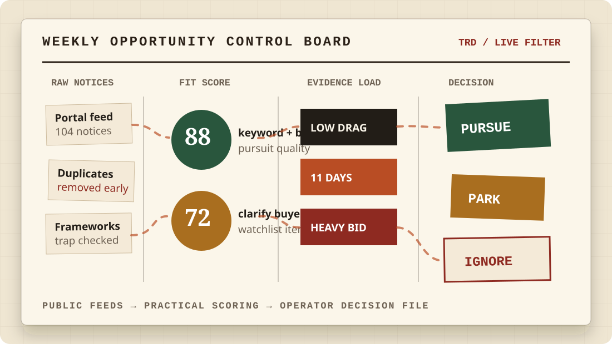
Public notices are scattered, repetitive and written for procurement teams. Small suppliers miss realistic jobs or waste hours on frameworks they should never chase.
We monitor Find a Tender and Contracts Finder, filter by your keywords and exclusions, then send a short action report with pursue/park/ignore notes.
The first paid step is small, useful and repeatable. A supplier can test one month of radar before buying a deeper bid-starter pack.
Upsell path after the radar
The page now makes the higher-value add-on visible: a compact bid-starter pack that turns one shortlisted notice into a go/no-go memo, evidence checklist, buyer questions and first response skeleton.
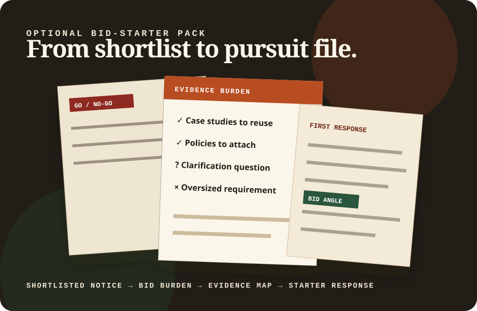
Conversion proof · time ledger
Small suppliers do not need a platform pitch; they need a commercial reason to try the first month. This new section frames the offer as a time-tax reduction with a clear escalation path into paid bid-starter files.
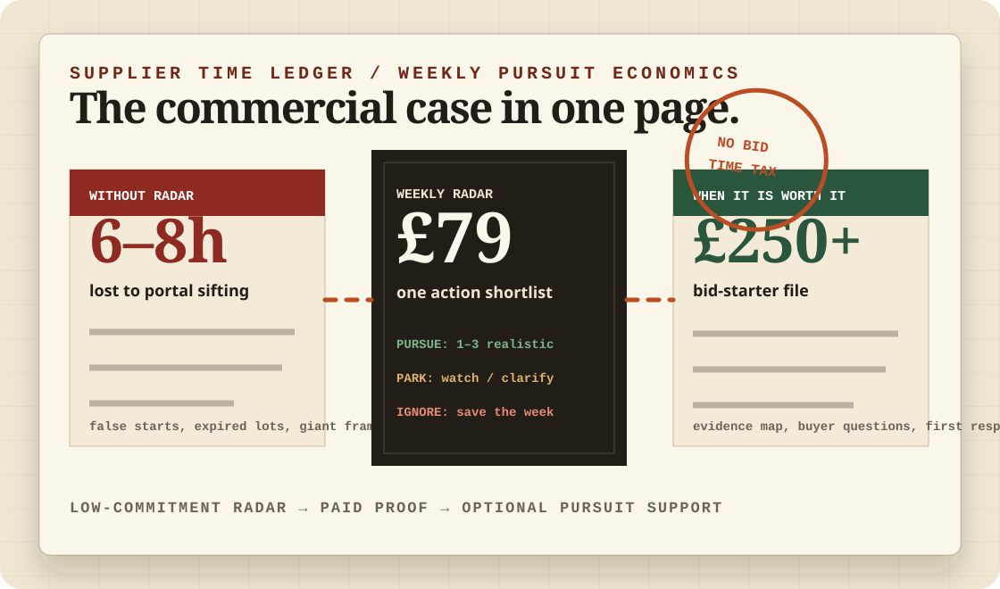
Delivery system
The engine is intentionally narrow: public feeds, practical scoring rules, a plain-English shortlist, then optional bid-start material for the opportunities worth chasing.
New conversion layer · evidence burden
This upgrade makes the public-sector offer feel more commercially ruthless: instead of just finding tenders, the page now shows how each opportunity is checked against case studies, policies, accreditations and social value proof before a supplier spends the week drafting.
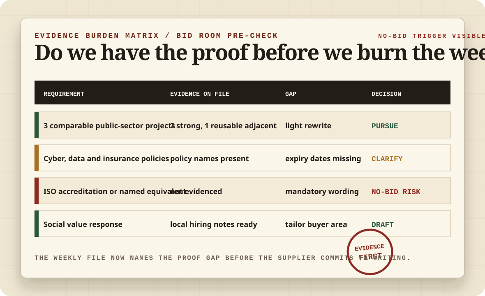
New craft layer · weekly operating clock
This upgrade makes the recurring subscription easier to believe: the buyer can see exactly how raw notices become a Friday decision file, with clarification and no-bid discipline built into the week.

New conversion layer · deadline control
This corridor makes the time pressure visible: each viable notice is moved through clarify, evidence, approval and submission gates while weak pursuits are killed before they consume operator hours.
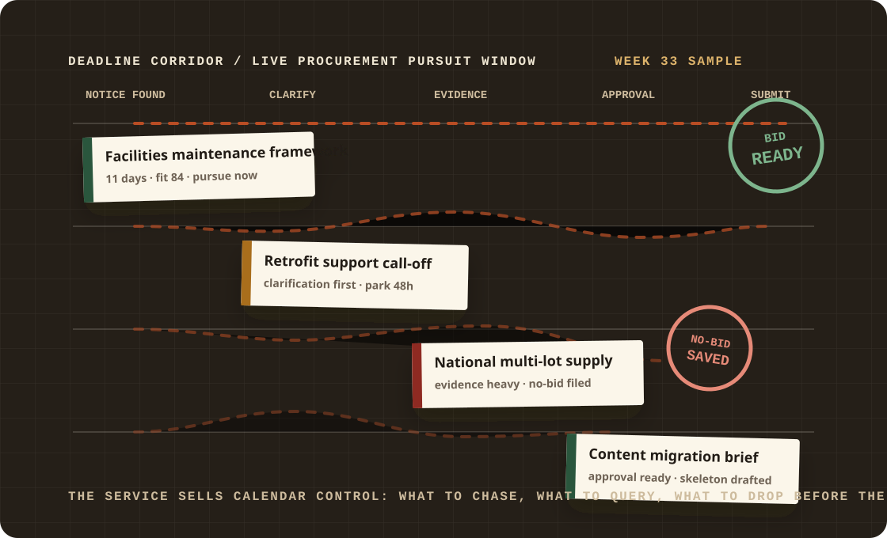
New conversion layer · deadline intelligence
This upgrade sharpens the procurement theme: the dossier now shows clarification windows, evidence drag and no-bid triggers as time-sensitive controls — the exact judgement small suppliers struggle to make inside portal PDFs.
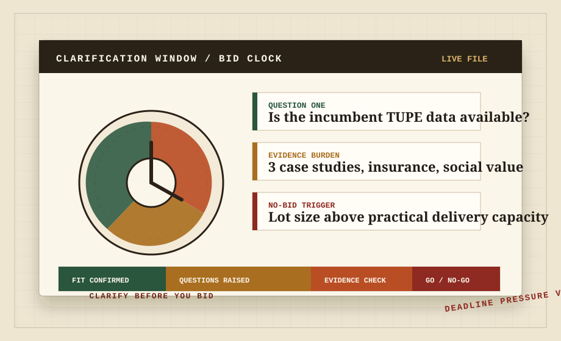
New visual layer · bid-room wall
The page now shows the actual buyer feeling: notices pinned, deadlines exposed, evidence burden marked, and only the bids worth a supplier’s week moved into the green lane.
New conversion layer · buyer decision annex
This upgrade sharpens the close: each sample dossier now promises the three artefacts a supplier can forward internally — the shortlist, the kill reasons, and the exact bid-starter trigger for any opportunity that survives review.
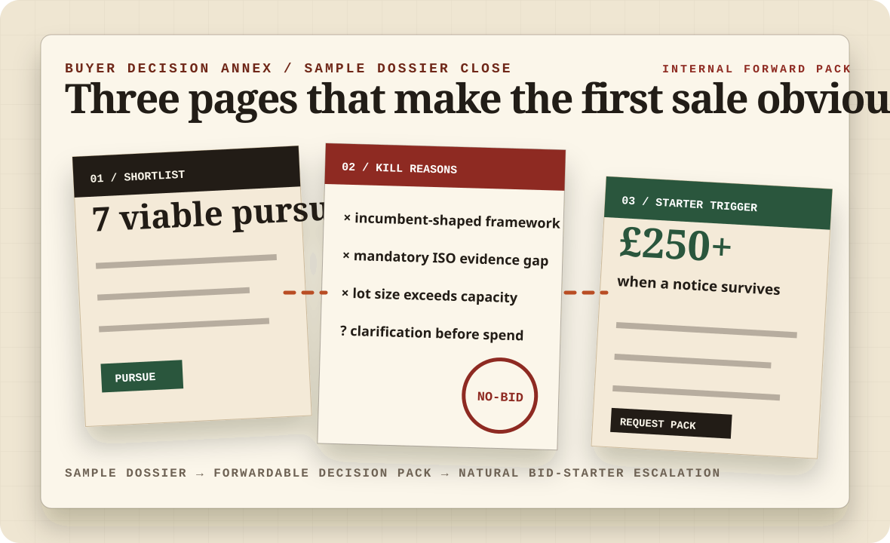
New conversion layer · clarification matrix
The latest upgrade makes the dossier more commercial: each shortlisted tender now has a visible query log, evidence pinch-points and a named no-bid trigger, so prospects can imagine the weekly file landing on their desk.
New conversion layer · bid red-team filter
This pass makes the offer feel more senior and commercially protective: each dossier now promises a visible red-team pass over SME fit, evidence drag, hidden TUPE or incumbent traps and the named decision owner before a supplier burns a week writing.
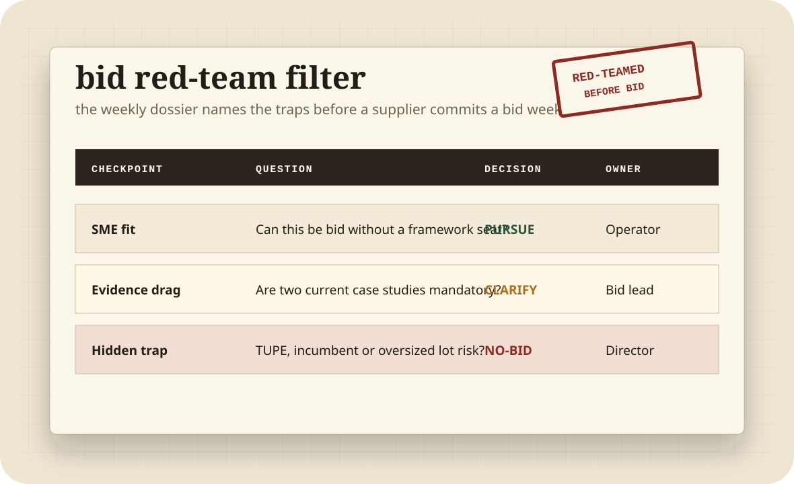
New conversion layer · evaluation scorebook
This pass adds a procurement-native decision gate: buyer weightings, available evidence, weak proof and no-bid triggers are shown before any response drafting begins. It makes the offer feel more like commercial bid judgement and less like a list of opportunities.
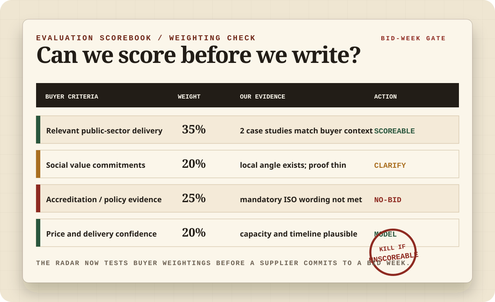
New conversion layer · go / no-go scorecard
This upgrade strengthens the paid sample: each opportunity now promises a scored decision gate across buyer fit, evidence readiness, capacity, margin and deadline pressure — so the buyer can see why a pursuit is recommended, parked or killed.
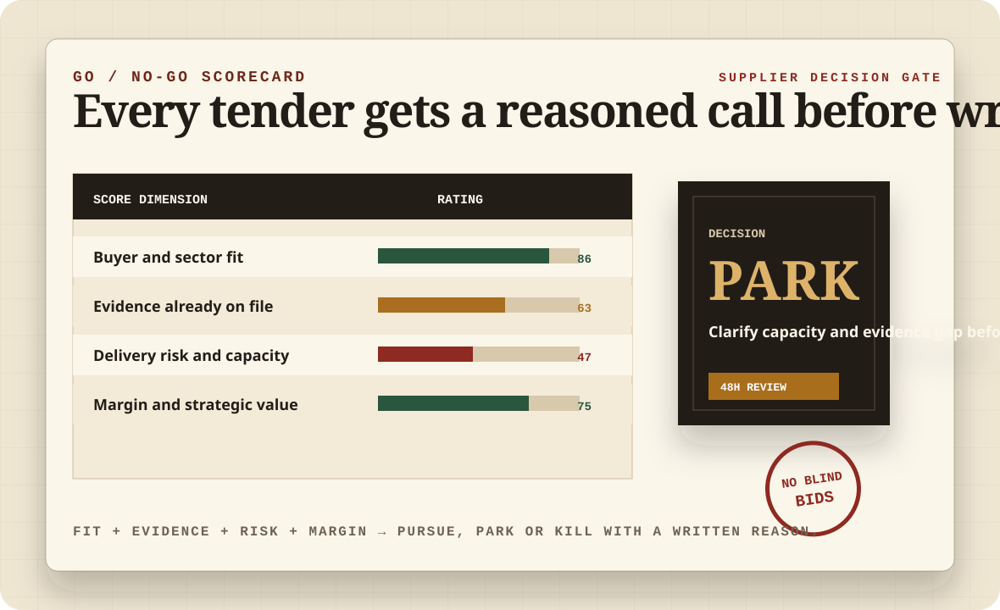
New conversion layer · award-route map
This upgrade makes the dossier feel more operationally senior: every shortlisted notice is mapped from buyer route and evaluation weighting to evidence readiness, clarification risk and the exact next action. It sells a decision system, not another tender alert.
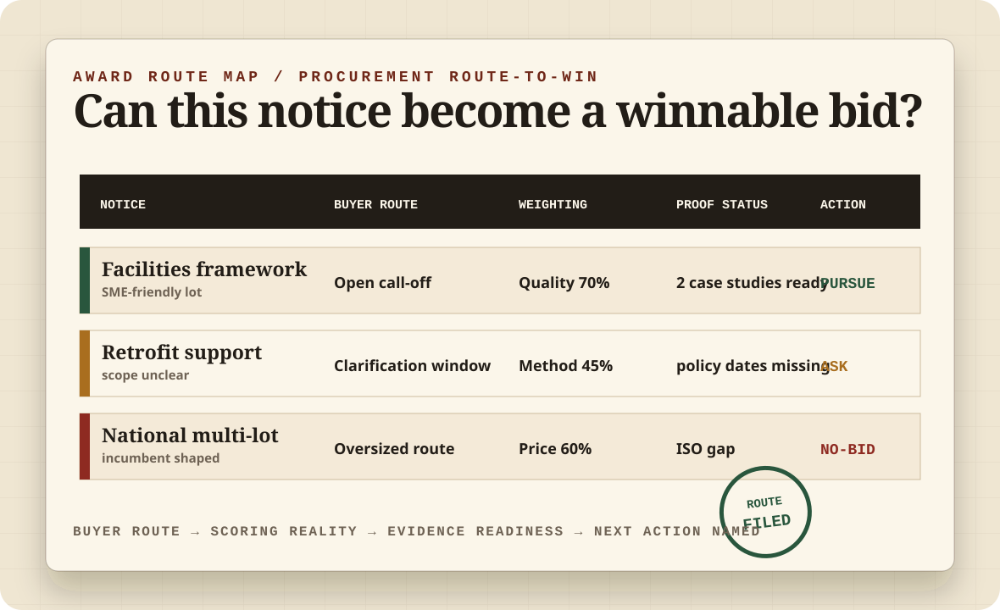
Added this run · award notice debrief
The strongest new conversion angle is the after-action loop: when a contract is awarded elsewhere, the weekly radar can log winner patterns, pricing clues, buyer behaviour and reusable lessons for the next pursuit.
Added this run · framework trap detector
This new desk makes the site feel more like an official opportunity-control room: every shortlisted notice is checked for oversized frameworks, incumbent-shaped lots, hidden mobilisation burden and evidence gaps before it reaches the supplier.
Added this run · policy proof locker
This upgrade adds a stronger buyer-protection layer: shortlisted notices are matched against policy dates, insurance limits, accreditations, case studies and social-value proof so the dossier can call a pursuit, query or no-bid before drafting starts.
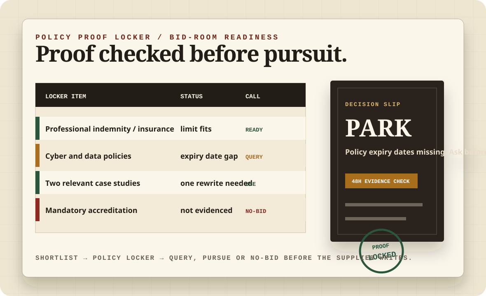
Added this run · mobilisation gate
This upgrade adds a more commercial no-bid layer: viable-looking notices are checked against mobilisation dates, named delivery owners, TUPE or onboarding drag, insurance limits and first-month proof before the dossier recommends paid bid-starter work.
Controlled first sale
No bloated SaaS theatre, no procurement jargon fog. The landing page sells a clear decision advantage to suppliers who need public work but do not have a bid desk.